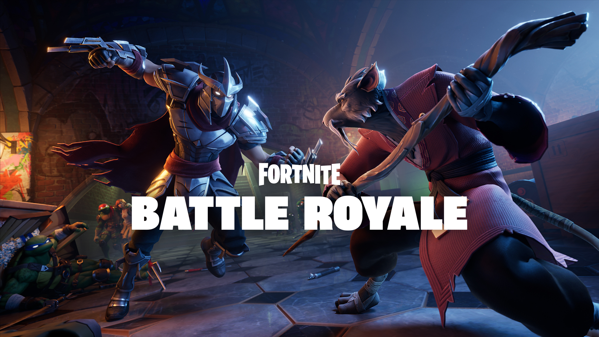

Fortnite Battle Royale
Fortnite Battle Royale is a free-to-play battle royale video game developed and published by Epic Games. It is a companion game to Fortnite: Save the World, a cooperative survival game with construction elements. It was initially released in early access on September 26, 2017, for macOS, PlayStation 4, Windows, and Xbox One, followed by ports for iOS, Nintendo Switch, and Android.[c] Epic dropped the early access label for the game on June 29, 2020. Versions for the Xbox Series X/S and PlayStation 5 were released as launch titles in late 2020.
The main gameplay for Fortnite Battle Royale follows the standard format for the battle royale genre. The game normally is played either with each player on their own, or in a squad of two, three or four players, with up to 100 players participating each round. The round starts with players, weaponless, skydiving from a flying "Battle Bus", then landing onto the game's map, simply known as The Island. The Island's fixed layout includes several landmarks and locations (mostly named in an alliterative fashion, such as "Lazy Lake", "Pleasant Park", and "Retail Row") that are mostly ghost towns during matches, while a random distribution of weapons, shields, and other combat support features can be found either as "floor loot" or by searching chests scattered in buildings and other sites. In addition, hostile NPCs were introduced in February 2020, which can be fought for additional and (typically) improved items, as well as friendly NPCs in December 2020, which can sell items such as weapons or consumables, or provide services such as acting as bot teammates or healing players.
The primary goal is to be the last player or team alive by eliminating or avoiding other players. When playing in solo modes, players are immediately eliminated when they exhaust their health. In squad modes, downed players can crawl around while losing health; they can be eliminated immediately by an opponent or revived by a squadmate to help them up. Initially, when the game launched, eliminated players were out of the match, but starting with an update in April 2019, players can attempt to respawn an eliminated teammate at various "Reboot Vans" scattered around the map, which are few and far between and in the open, making it a risk to respawn a squadmate. Over time, the game's safe zone (representing the eye of a storm), decreases in size, and players caught outside the zone will take damage by a specific amount per second, with the amount of damage per second increasing as the match progresses. This directs the surviving players into tighter spaces, forcing player encounters. Supply drops will spawn in random locations during a match, providing random, higher-quality weapons and items. Like in the original Fortnite game, Fortnite Battle Royale is primarily played in a third-person perspective.